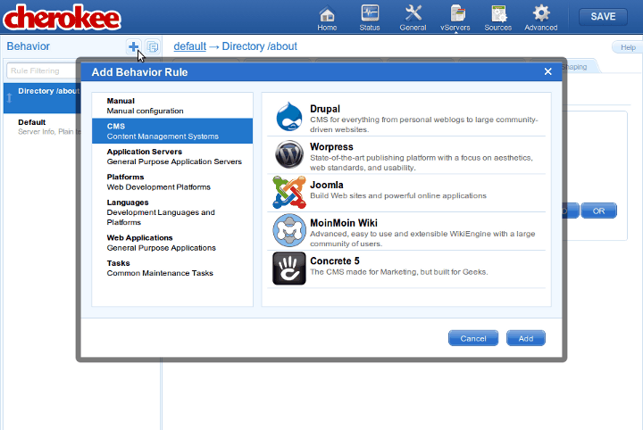

Setting up Drupal with Cherokee is really easy. This recipe describes the Drupal 6.x installation, which is the latest release at the time of writing.
There are two ways of installing Drupal: it can either be installed as a new virtual server or be installed inside a directory of some of the virtual servers that already exist.
Setting up Drupal as a new Virtual Server
The first step would be to go to the virtual server list page. Once in there, click on the Add button at the top of the panel to show the list of available wizards.
Now, you will have to select the CMS category, and run the Drupal wizard. At this stage the Drupal wizard will ask you for some basic parameters about the installation. It will try to auto-fill as many entries of the form as possible. For instance, if it finds Drupal installed in a standard location it will use that path as the default directory.
The new virtual server will be created after this form is submitted. The virtual server configuration will cover the vast majority of the cases. Most probably it will cover your needs, although you are free to modify it as you will.
Setting up Drupal inside a Directory
Drupal can also be configured inside a directory. Let’s suppose we want to set up Drupal inside the /blog directory of one of our virtual servers.
In this case, the first thing you will have to do is to enter the virtual server configuration you’d like to configure Drupal in. Visit the Behavior tab, use the Rule Management button and click on the Add button at the top of the panel.

As in the previous case, this wizard will ask some very basic information, including the public web directory where Drupal will be set up and the local Drupal source directory.
Setting up Drupal
First download and uncompress the distributed Drupal release into /var/www/drupal, and create a database suitable for the installation.
Log in to MySQL:
mysql -u root -p
And create the database for Drupal. We will be using the name drupal, the user drupaluser and the password drupalpassword, but you should set up your own.
CREATE DATABASE drupal; GRANT ALL PRIVILEGES ON drupal.* TO drupaluser@localhost IDENTIFIED BY 'drupalpassword'; GRANT ALL PRIVILEGES ON drupal.* TO drupaluser@localhost.localdomain IDENTIFIED BY 'drupalpassword'; FLUSH PRIVILEGES; quit;
Then point your web browser to http://localhost and follow the instructions provided by the installer.
You will need to copy the config file and change the permissions manually to proceed:
cd /var/www/drupal/sites/default cp default.settings.php settings.php chmod 644 settings.php
And the installation will be almost automatic. Just fill up the requested values and you will obtain the following results once your are through.
|
Note
|
As of Drupal 6.14, a problem has been reported related to gzip compression of multilingual contents. Since the Wizard is meant to work out of the box, Cherokee disables gzip compression for the rule that manages PHP in your Drupal Virtual Server. If you are not using a multilingual Drupal or find another workaround for the issue, you will probably want to enable gzip encoding on the PHP rule to increase performance. |